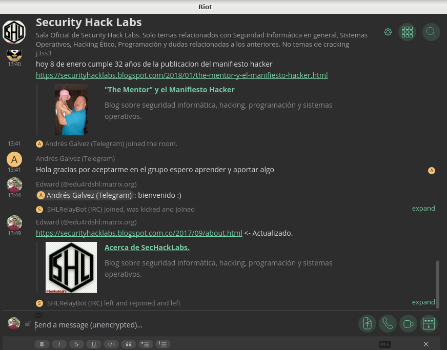

|  |
 |
Acerca de
¿Que es SecHackLabs (Security Hack Labs)?
SecHackLabs es un Team dedicado a la búsqueda, estudio, análisis y corrección de vulnerabilidades en
sistema informáticos, ofreciendo soporte y solución a la gran mayoría de fallos existentes. En
SecHackLabs se sigue el principio del ethical-hacking o Hacking Ético, cada vez que se descubre una
falla que coloque en riesgo la integridad de un sitio web, servidor o cualquier infraestructura informática
inmediatamente se da aviso a sus administradores usando las vías de comunicación disponibles. El
cracking lucrativo no es bienvenido en SecHackLabs (Incluye carding, phishing en ambientes no
controlados, robo de credenciales WiFi, etc. Si deseas tratar este tipo de temas, solo podrás hacerlo
mediante el foro en General -> Offtopic https://www.foro.securityhacklabs.net/viewforum.php?f=3),
adicionalmente SecHackLabs también se dedica al diseño y desarrollo de software libre/privado
mediante el cual busca lograr sus objetivos, su código libre está disponible en su repositorio de Github.
Además de proveer las soluciones anteriormente mencionadas, SecHackLabs también tiene un servicio
que se basa en el modelo de enseñanza/aprendizaje online para todas aquellas personas interesadas en
la seguridad informática y que deseen aprender. Se trata de una sala de chat online, usando un servicio y
una red descentralizada, anónima y segura conocida como Matrix, para lo cual hace uso de su cliente
más completo y con mejores características Riot.im, el cual es de código abierto y multiplataforma. Para
ingresar a dicha sala solo debes seguir el link https://riot.im/app/#/room/#securityhacklabs:matrix.org o
bien instalarlo en tu computadora/celular siguiendo estas instrucciones. Adicionalmente contamos con
una sala de chat en el IRC Freenode, el ingreso por web al IRC es mediante este link:
https://webchat.freenode.net/?channels=sechacklabs, los datos para clientes IRC son: Servidor:
chat.freenode.net Puertos: 6667/6697, esté último es para conexiones usando SSL (Si deseas
conectarte a IRC usando TOR, lee https://freenode.net/news/tor-online) y un grupo en Telegram
https://telegram.me/SecHackLabs, las cuales están conectadas entre sí mediante bridges (Puentes de
conexión) pudiéndose así hablar en cualquiera de las tres sin perderse de nada.
El bot @matrix_t2bot es el bot es el encargado de conectar nuestra sala principal que usa el protocolo
Matrix (Un protocolo totalmente descentralizado y seguro https://matrix.org) usado en la sala de chat
https://riot.im/app/#/room/#securityhacklabs:matrix.org con la sala de Telegram (https://telegram.me
/SecHackLabs), a su vez la sala https://riot.im/app/#/room/#securityhacklabs:matrix.org está conectada
mediante el bot @appservice-irc:matrix.org a nuestra sala de chat en IRC https://webchat.freenode.net
/?channels=SecHackLabs y entre estos dos bots se encargan de conectar los tres protocolos: IRC,
Matrix(https://matrix.org) y Telegram, de ese modo cualquier cosa que se escriba en una de las tres
salas será visible para los miembros de las otras dos. La manera de saber cual usuario es el que escribe,
es mediante el nombre que aparece al inicio de cada mensaje que envía el bot @matrix_t2bot (Ej.
AngelSHL, Edward, J3ss3). Cabe destacar que el bot también muestra quien entra/sale en las otras dos
salas de chat (IRC y Matrix) Aquí unas imágenes demostrativas.
Reglas para acceder, permanecer o solicitar servicios en SecHackLabs.
Al ser un Team público y con una flexibilidad tan grande, casi cualquier persona, excepto aquella que infrinja en
alguna de las siguientes prohibiciones:
1) Usar el nombre de SecHackLabs para cometer actos ilegales.
2) Ingresar a SecHackLabs pretendiendo realizar cracking lucrativo.
3) Tratar de infectar con cualquier tipo de código, software, malware a los participantes usando ingeniería social
y otras técnicas.
4) Difundir cualquier tipo de software malicioso sin avisar a los participantes el tipo de software que es.*
5) Tratar mal a los participantes de SecHackLabs.
6) Compartir material y/o contenido que incite a las prácticas del cracking
7) No son bienvenidas las siguientes técnicas: Defacing de páginas web, carding, robo de cuentas (Redes sociales,
YouTube, etc), ataques DDoS en ambientes no controlados, botnets.
*El malware puede ser enviado a la sala de chat SIEMPRE y cuando se avise a sus participantes sobre el tipo de
malware o bien, usando el hashtag #malware. Este puede ser usado por expertos para debuggearlo.
El incumplimiento de cualquiera de las anteriores prohibiciones es motivo para expulsión de cualquiera de los
medios sin previa advertencia.
|